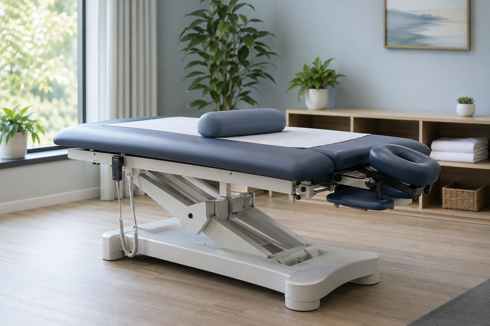
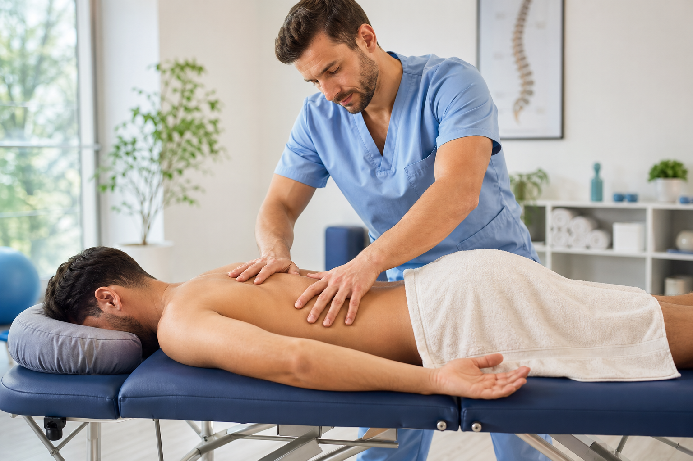

Рехабилитация и кинезитерапия
Индивидуално насочени програми за възстановяване на функцията, подобряване на мобилността, стабилността и правилните двигателни навици след счупване, обездвижване, инсулт или болков синдром.
Здраве и възстановяване
Индивидуални програми по рехабилитация, кинезитерапия, лечебни масажи, физиотерапия и шрот терапия в спокойна среда, създадена за внимателна работа с деца и възрастни при нужда от възстановяване след счупване, инсулт, болки в кръста и болки в крайниците.
За центъра
Работим с пациенти, които търсят сигурен, спокоен и структуриран подход при болка, ограничение в движението, проблеми със стойката и нужда от функционално възстановяване след травма, обездвижване или неврологично състояние.
Всяка програма се адаптира според конкретното състояние, възрастта, ежедневното натоварване и целите на пациента, като акцентът е върху устойчив напредък, правилна техника, проследяване на състоянието и добра комуникация със семейството.
Специалист
Специалистът е кинезитерапевт с над 20 години опит в сферата на рехабилитацията, физиотерапията, лечебния масаж и шрот терапията.
Образованието е завършено в Националната спортна академия, което поставя стабилна основа за работа с пациенти с различни двигателни, ортопедични и функционални проблеми.
Среда и терапия




Терапии
Индивидуално насочени програми за възстановяване на функцията, подобряване на мобилността, стабилността и правилните двигателни навици след счупване, обездвижване, инсулт или болков синдром.
Лечебни масажи с насоченост към отпускане на напрегнати зони, подобряване на кръвообращението, намаляване на болката и подпомагане на възстановителния процес.
Съвременен физиотерапевтичен подход за подпомагане на възстановяването, облекчаване на болката и по-бързо функционално възстановяване чрез апаратна терапия и специализирани процедури.
Специализиран акцент за деца и пациенти с нужда от работа върху стойката, дишането, симетрията и контрола на тялото.
Основен фокус
Терапевтичният план може да бъде насочен към възстановяване след счупване, работа след инсулт, подобряване на походката и координацията, както и облекчаване на болки в кръста, ставите и крайниците.
Съчетаваме активна работа, лечебен масаж, апаратна физиотерапия и подходящо позициониране на тялото, за да подпомогнем възстановяването по щадящ и последователен начин.
Как протича
Оценка на стойката, оплакванията, натоварването в ежедневието и двигателните особености на пациента.
Избор на подходяща комбинация от мануална работа, кинезитерапия, апаратни процедури и честота на посещенията.
Постепенно надграждане, обучение в правилна техника и системно наблюдение на напредъка във времето.
Апаратура и база
Премиум терапевтична маса
Висок клас електрически регулируема маса с интегрирани drop, traction и flexion функции, подходяща за прецизна мануална работа, лечебен масаж, позициониране, раздвижване и комфорт по време на терапия.
Лазерна физиотерапия
Съвременна 1-канална лазерна система с 7" цветен тъчскрийн, готови протоколи и continuous / pulsed режими за прецизна физиотерапевтична работа при болка, възпаление и възстановяване.
Зала за активна терапия
Пространство за активна работа върху стойка, мобилност, баланс, координация и контролирано изпълнение на упражненията.
Следваща стъпка